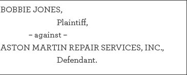

CHAPTER 3
Defamation
The High-End Mechanic
BOBBIE JONES is an auto mechanic who specializes in Aston Martins. For the past eight years, Jones worked for Aston Martin Repair Services (AMRS), a small auto repair shop owned and managed by the Sharpe family. A month ago, Morgan Sharpe, the office manager, fired Jones stating that another mechanic had reported that Jones was pilfering car parts from the shop. Jones vehemently denied the claim, but to no avail. Recently, Jones applied for another mechanic position with a competitor, British Auto Repairs, and despite strong qualifications and an excellent interview, Jones was turned down after a reference check. Jones suspects that the Sharpes told British Auto Repairs that Jones was stealing car parts.
You are a solo practitioner specializing in plaintiff-side employment matters. You filed a complaint in state court against AMRS and the Sharpes, alleging breach of contract, tortious interference with a prospective advantage, and defamation. AMRS answered the complaint, denying the claims and allegations. After an initial court conference, the parties are now engaged in discovery. You must draft interrogatories to propound on AMRS for the defamation claim.
Interrogatories are used to gather information from the opposing party and can be a cost-effective way to obtain basic facts. Information-gathering interrogatories are formal and precise.
They should be designed to elicit exact and factually precise answers, such as the names of witnesses and experts, contact information, documents, dates, and places. Interrogatories can also be used to flesh out the opposing party’s legal position. These contention interrogatories require the opposing party to state its position and the factual basis for its position on issues in the case. This can be done by asking the opposing party to “state the facts upon which you rely in asserting _______.”
After brainstorming your discovery goals, draft ten specific and precise interrogatories to obtain facts needed to support the elements of Jones’ defamation claim and relevant defenses, using the forms below.
Points to Consider:
1. In order to determine your discovery goals, you must review the claim and develop a strategy to win that claim for your client. What are the elements of defamation? What is a statement of “fact” versus a statement of “opinion”? Do any privileges apply in this context?
2. Brainstorming and anticipating opposing arguments are key to successful discovery in litigation. What are AMRS’s likely contentions and defenses? What relevant information might AMRS and the Sharpes have that they are likely to rely on in defending against Jones’ defamation claim? Which witnesses and what documents are relevant?
3. Suppose Jones later confesses to stealing auto parts over the course of Jones’ eight-year tenure at AMRS, but only “once or twice” and for a total amount worth less than $10.00. Is your defamation claim now without merit? The Complaint alleged for the defamation claim that “Jones never stole anything of value from AMRS.” What are your ethical obligations given the assertions in your Complaint?
4. If you decide that Jones’ defamation claim is without merit, but Jones disagrees and demands that you litigate it, what is your ethical obligation to continue representation on this claim?
Defamation Worksheet
Brainstorm what evidence is needed for each element of a defamation claim:
• Element 1:
• Element 2:
• Element 3:
• Element 4:
Brainstorm what evidence is needed to establish any affirmative defenses to the defamation claim:
Interrogatories Form
IN THE UNITED STATES DISTRICT COURT

PLAINTIFF’S INTERROGATORIES
INSTRUCTIONS
Each Interrogatory is to be answered fully on the basis of information that is in your possession.
In each of your answers to these Interrogatories, you are requested to provide not only such information in your possession, but also information that is reasonably available. In the event that you are able to provide only part of the information called for by any particular Interrogatory, please provide all the information you are able to provide and state the reason for your inability to provide the remainder.
If you object to or otherwise decline to answer any portion of an Interrogatory, please provide all information called for by that portion of the Interrogatory to which you do not object or to which you do not decline to answer. For those parts of an Interrogatory to which you object or to which you decline to answer, state the reason for such objection or declination.
DEFINITIONS
[Omitted]
INTERROGATORIES
1.
2.
3.
4.
5.
6.
7.
8.
9.
10.